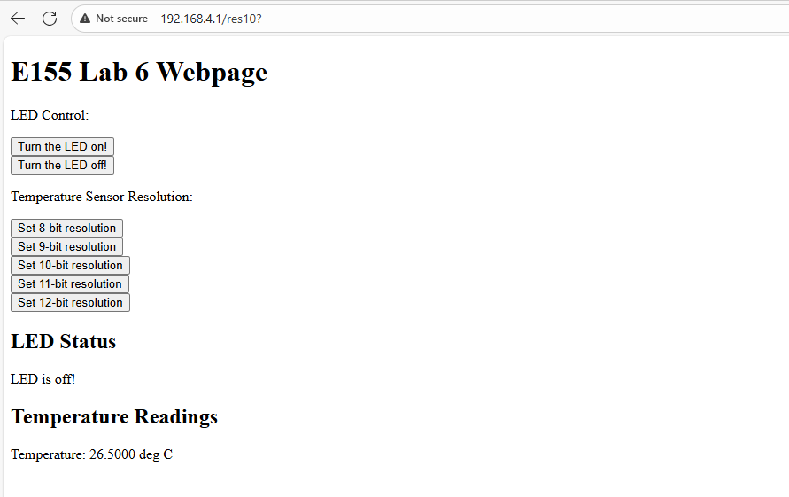
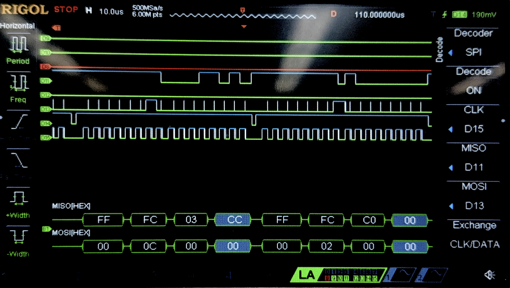
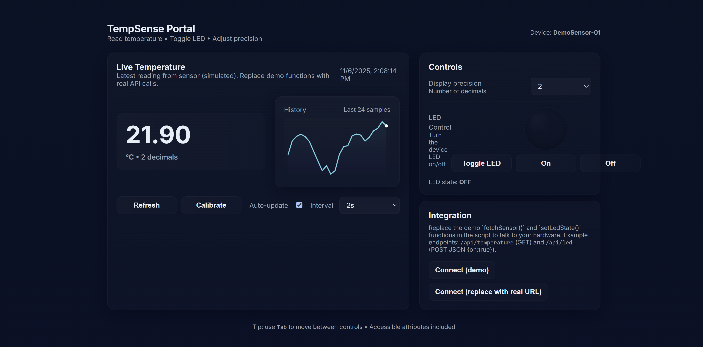

Lab 6: The Internet of Things and Serial Peripheral Interface
Introduction
The goal of this design is to practice the functionality of MCU by interfacing a temperature sensor (DS1722) over an SPI link and building a webpage by interfacing ESP8266 over a UART link.
Design
I used the starter code provided by the course for setting up most of the MCU. Referencing the STM32L432KC reference manual, programming manual, and datasheet, I was able to utilize functions to set up and enable the SPI. Specifically, port B was chosen as the pins for the SPI to avoid interfering with the UART pins in port A. To enable the SPI, I wrote the functions initSPI and spiSendReceive, which sets up the SPI following steps from the reference model and transmits a character over SPI while returning the received character, respectively.
Functions for the temperature sensor DS1722 was also written. According to the datasheet, the raw data stored in MSB and LSB was received by the SPI, and calculated to convert to a floating value of temperature. As per the design of the sensor, resolution from 8 to 12 bits can also be set through the initialization function.
To set up the ESP8266 web server, I simply modified the starter code provided as mentioned above, changing the looks of the webpage and adding functions related to the temperature sensors, such as buttons to control the resolution.
The circuitry design simply connects the desired pins of MCU to DS1722 and ESP8266. The schematics for the physical circuit design is shown in the following graph:
Testing and Results
The webpage can successfully run, lighting up and turning off LED when pressing the buttons, while updating temperature measured by the DS1722 whenever the page is refreshed. On top of that, the page also allows configuring the precision of the temperature sensor, also controlled by buttons. When touching the sensor, the measured temperature rise accordingly.

When verifying the SPI function with logic analyzer on oscilloscope, we have the following result:

This figure does not perfectly reflect the values that the SPI transaction receives, since there seem to be some glitches in the the clock measured by the oscilloscope. I suspect that this may be due calibration or some faults of the oscilloscope. However, when looking at the shape of the waveforms in general, the picture does show 16 clock cycles for each pulse of CE and also corresponding MOSI and MISO.
Conclusion
In this lab, I successfully designed and built a MCU design that was able to correctly set up a webpage with USART and interface with a temperature sensor using SPI. As mentioned in previous sections, the webpage reflects the temperature when refreshed, configures the precision of the temperature sensor, and control a LED with button. Therefore, I believe that my design for this lab meets all the requirements of this lab. This week, I spent 10 hours on the lab. One issue that I spent the most time debugging was the logic analyzer, which I had not had much experience with.
AI Prototype Summary
For this AI prototype, I used ChatGPT. When feeding the first prompt into it, it produced a well-looking website with cool designs. However, it was not really interfacing with the temperature sensor since the temperature were changing even when nothing was plugged into it.

As for writing the SPI functions, ChatGPT did a fair job with initializing the SPI and also writing the code for transmitting data. However, it missed configuring the GPIO pins that would physically connect to the temperature sensor, so the design did not work.